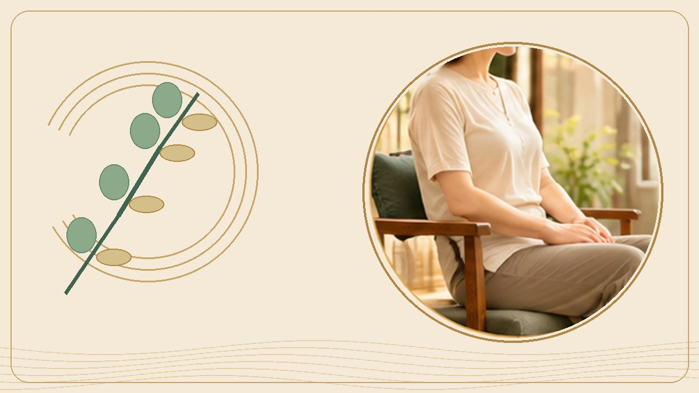

日々の座り方、歩行、休息環境を考え、臀部・股関節周辺のサービスにおけるプライバシーの範囲を知ります。
一日の活動の割合から考える
仕事、通勤、食事、余暇で一日の多くを座って過ごすことがあります。臀部・股関節周辺の日常ケアは姿勢を変える機会や活動の機会から始められます。台湾国民健康署は長時間の座位行動を減らすよう勧めています。全員に同じ動きを求めるのではなく、自分の条件に合う活動の余地を探しましょう。
安全で快適な座席を選ぶ
日常の椅子は用途に合い、安定した支えと十分な空間が必要です。座って物を取るため頻繁に前へ手を伸ばす、椅子の高さで机が使いにくい場合は環境を調整できるか確認しましょう。補助具や特別な身体のニーズがあれば適切な専門家の支援を受けてください。椅子、クッション、固定姿勢で特定の身体効果が得られると考えないでください。
今ある行程に活動を組み込む
座り仕事の方は合間に適度に立ち、安全と身体状態が許せば買い物、通勤、食事の前後に短い歩行を組み込めます。その日すでに長く歩いたなら座って休む機会を残しましょう。臀部・股関節周辺のケアに大きな動きは必須ではなく、自分に合うリズムが続けやすくなります。
接触範囲とプライバシーを先に確認する
臀部・股関節周辺はより私的な身体部位に関わります。関連するリラクゼーションを希望するなら、実際の合法的なサービス、服装、覆い方、接触範囲を先に確認してください。一般的な紹介からブランドが提供していると推定せず、予約をあらゆる接触への同意と解釈してはいけません。不本意または不明なら拒否でき、私的部位に関わらない別の方法も選べます。
手技で体型の変化を求めない
本記事は一般的な生活活動と休息を扱い、骨格矯正、体型変化の保証、医療効果は扱いません。ネットの体型の前後比較を自分で検証できる事実とみなしたり、強い力を伴う動作を模倣したりしないでください。持続・突然の不調、最近のけが、活動制限があれば先に医療評価を受けましょう。
座席ごとに同じ手配にする必要はない
例えば通勤中は立つ空間がなくても、職場では活動しやすいことがあります。場所ごとの制約を分けて考え、動けなかった分を次の時間に倍にする必要はありません。車椅子や補助具を使う方は一般的な歩行計画ではなく、安全条件と適切な専門家の助言に基づいて調整してください。
よくある質問：座りっぱなしの習慣を見直すには臀部・股関節周辺の手技が必要ですか？
必ずしも必要ではありません。仕事の合間、座席の条件、安全な活動から始めましょう。手技を相談するかは実際のサービスと自分の受け入れやすさによる個人的選択です。日常ケアで決まった部位リストを完了する必要はありません。
参考資料
国民健康署｜日常生活に活動を取り入れる（閲覧：2026-11-26）
科技大観園｜職場の人間工学的危険と環境配置（閲覧：2026-11-26）
衛生福利部｜民俗調理業者の広告掲載時の注意（閲覧：2026-11-26）
本文は一般的な生活・文化情報で、個別の医療助言ではありません。本人による確認待ちです。実際のサービス内容、料金、時間、場所はお問い合わせで確認してください。